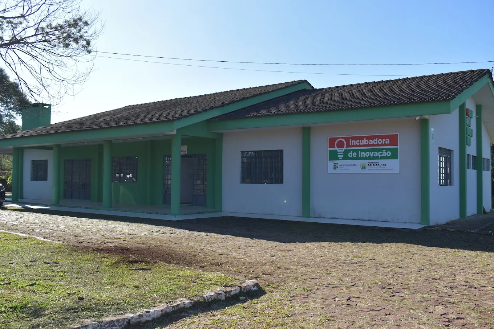

Quem Somos
A Incubadora de Palmas é resultado de uma parceria estratégica entre o Instituto Federal do Paraná (IFPR) e a Prefeitura Municipal de Palmas. Nascemos com a missão de criar um ecossistema de inovação que capacita empreendedores desde o primeiro dia. Oferecemos formação técnica e gerencial de qualidade, mentoria especializada e infraestrutura adequada para que seus negócios cresçam de forma sustentável e impactante.

Nossos Programas
Dois caminhos para transformar sua ideia em negócio de sucesso
Pré-Incubação
Para quem tem uma ideia brilhante mas ainda precisa validar o conceito. Receba orientação para estruturar seu projeto e transformá-lo em um negócio viável.
- Validação de conceito
- Mentoria especializada
- Formação técnica
Incubação
Para quem já tem um protótipo de negócio e busca avançar no seu desenvolvimento. Acesso a mentorias especializadas e parceiros estratégicos
- Mentoria especializada
- Conexão com investidores
- Infraestrutura compartilhada
Startups
Conheça as empresas inovadoras que estão transformando Palmas
Incubadas
Dia de Feira
Selecionamos o melhor das colheitas locais e entregamos cestas de hortifrúti fresquinhas direto na casa das pessoas, via assinatura. Facilitamos a vida de quem quer comer bem, mas não tem tempo de ir à feira.
Email: clientesdiadefeira@gmail.com
Instagram: @odiadefeira
OdontoFlow
Plataforma SaaS focada na gestão inteligente para o setor de odontologia. Otimiza o fluxo de trabalho de clínicas com agendamento, prontuários digitais e gestão administrativa integrados.
Email: jefe.gomes154@gmail.com
Website: Em desenvolvimento
WinCity
O WinCity é uma plataforma que conecta consumidores e empresas locais por meio de um sistema inteligente de incentivos, dados e relacionamento.
Email: citycashapp@gmail.com
Link Website: Em desenvolvimento
GlicCare
Plataforma de saúde digital para organizar a rotina glicêmica com privacidade, consentimento e apoio à rede de cuidado autorizada.
Responsável: Leandro Santos Cambrussi
LinkedIn: linkedin.com/in/leandro-cambrussi-72b833186
Manual do Mei Digital
Em breve mais informações sobre esta startup inovadora.
Pré-incubadas
EcoNexos
Conecta empresas que geram resíduos a empresas que podem reutilizá-los como matéria-prima, promovendo economia circular. Oferece suporte ambiental e jurídico para destinação adequada.
Email: contato.econexos@gmail.com
Website: Em desenvolvimento
Notícias
Acompanhe as novidades e eventos da Incubadora de Palmas

🚀💡 INSCRIÇÕES ABERTAS – IDEATHON GOVTECH PALMAS!
Chegou a hora de montar sua equipe e transformar desafios reais da cidade em soluções inovadoras! 🧠⚡🏙️
👥 Reúna sua equipe
💡 Desenvolva ideias
🧪 Valide e prototipe soluções
🎤 E apresente tudo no Pitch Final!
📅 Datas:
17/09 – Imersão e Ideação
18/09 – Validação e Prototipação
20/10 – Pitch Final
⏰ 19h às 22h30
📍 IFPR – Campus Palmas
🔥 Não fique só assistindo a inovação acontecer. Entre no jogo e faça parte dessa experiência!
📲 Inscreva sua equipe aqui:
🔗 https://forms.cloud.microsoft/r/jDS05ypXVP
🚀 PARTICIPE. COLABORE. INOVE. IMPACTE.

Incubadora de palmas marca presença na Mostra de Cursos do IFPR Palmas 2026
Entre os dias 18 e 20 de agosto de 2026, o IFPR – Campus Palmas realizou a Mostra de Cursos, que reuniu aproximadamente 2.000 visitantes. A Incubadora de Palmas esteve presente durante os três dias do evento, interagindo com estudantes e membros da comunidade e apresentando as iniciativas, projetos e oportunidades oferecidos pela Incubadora.
Editais
Confira os editais e chamadas abertas da Incubadora de Palmas
Edital de Seleção - 01/2026
Edital para seleção de projetos e empreendedores para participação nos programas de pré-incubação e incubação.
Baixar PDFEntre em Contato
Telefone
Endereço
Av. Bento Munhoz da Rocha Neto, s/nº (PRT-280)
Bairro Universitário, Palmas - PR
CEP: 85555-000
Localização
